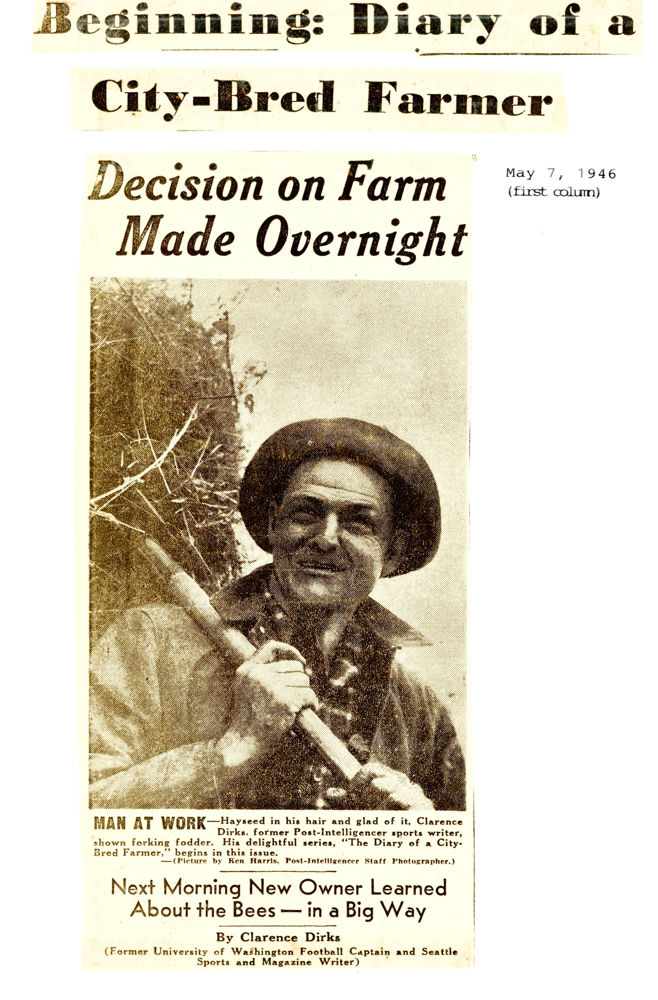
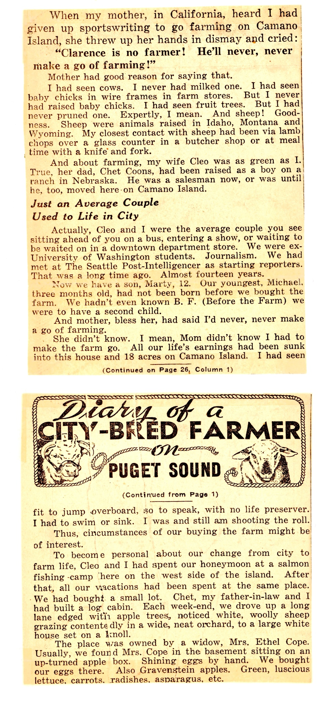
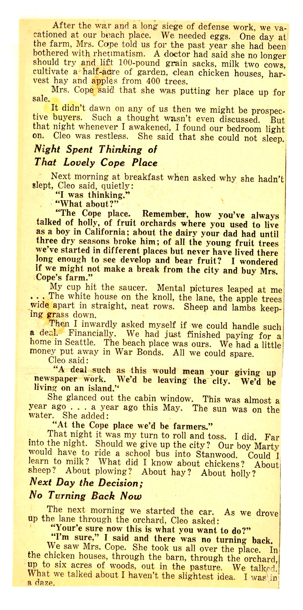
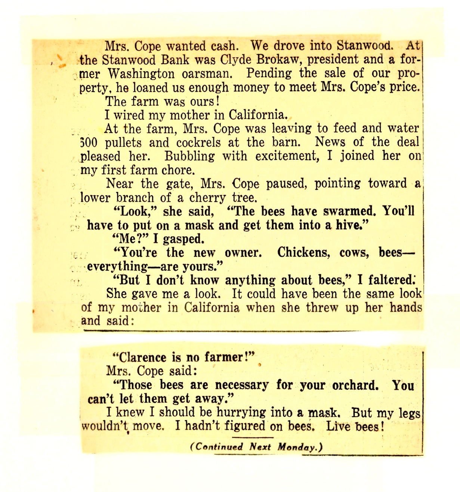
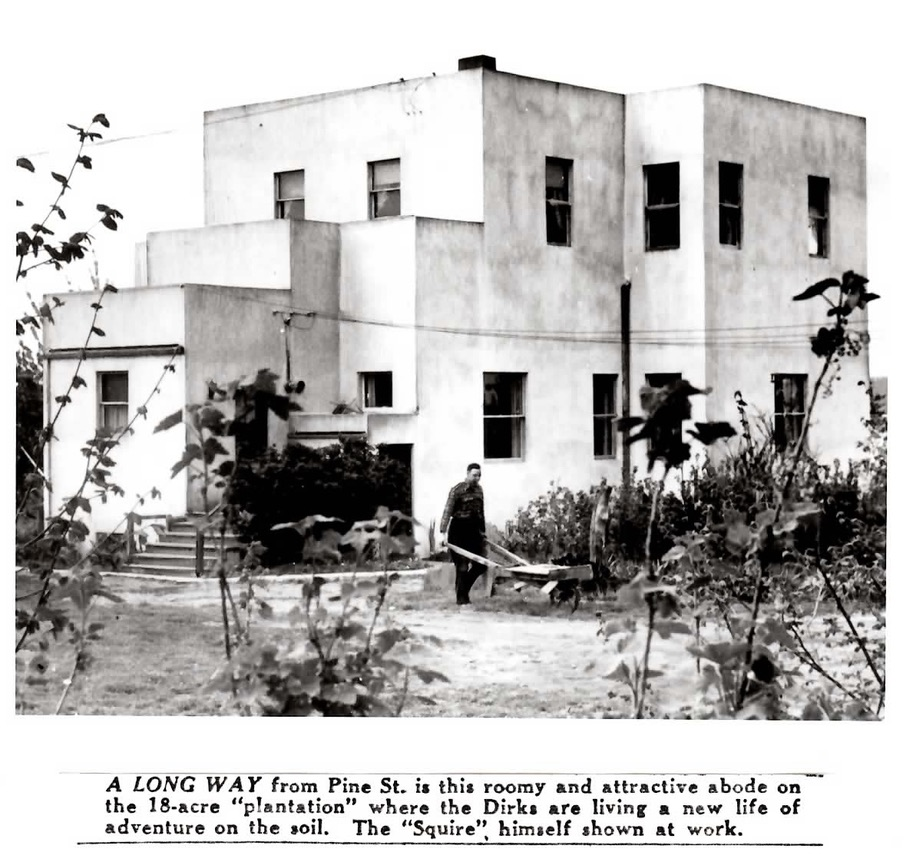
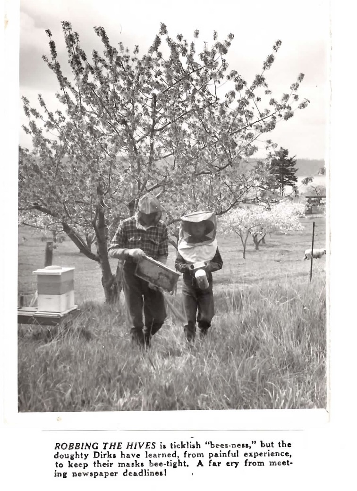
There is more to raising poultry than picking eggs and selling them at a profit, as the refugee from the newsroom soon learned. Here the boss of El Camano Ranch ponders his problems.
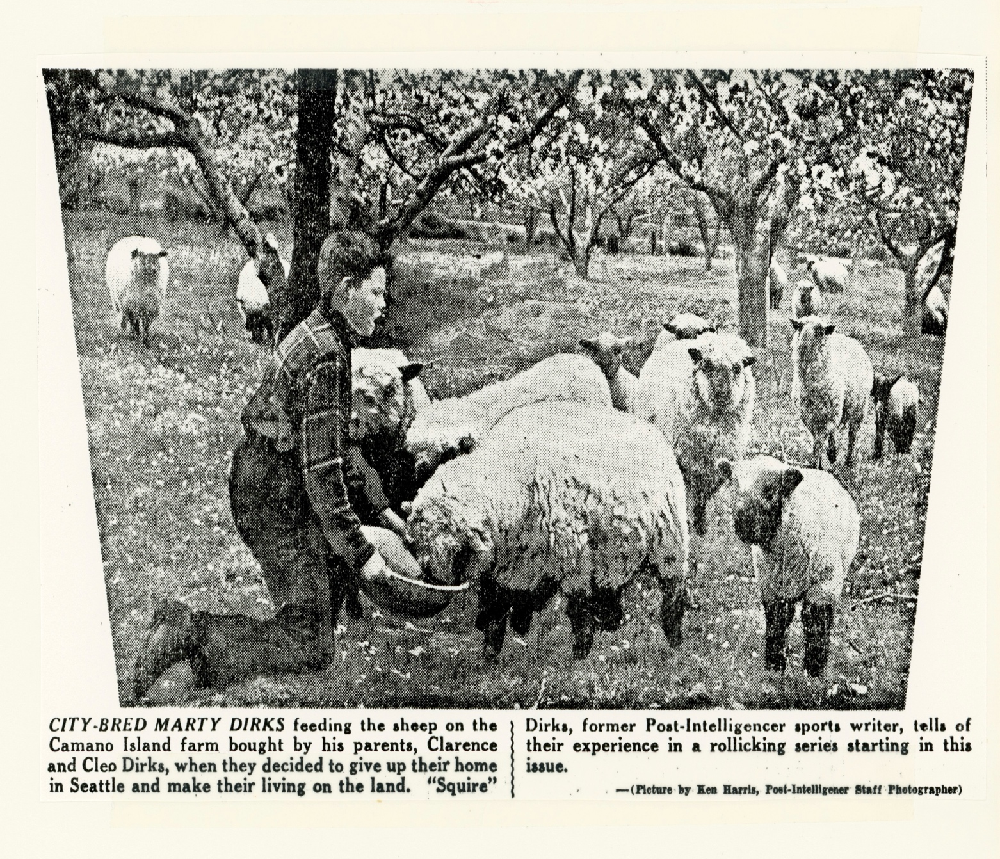
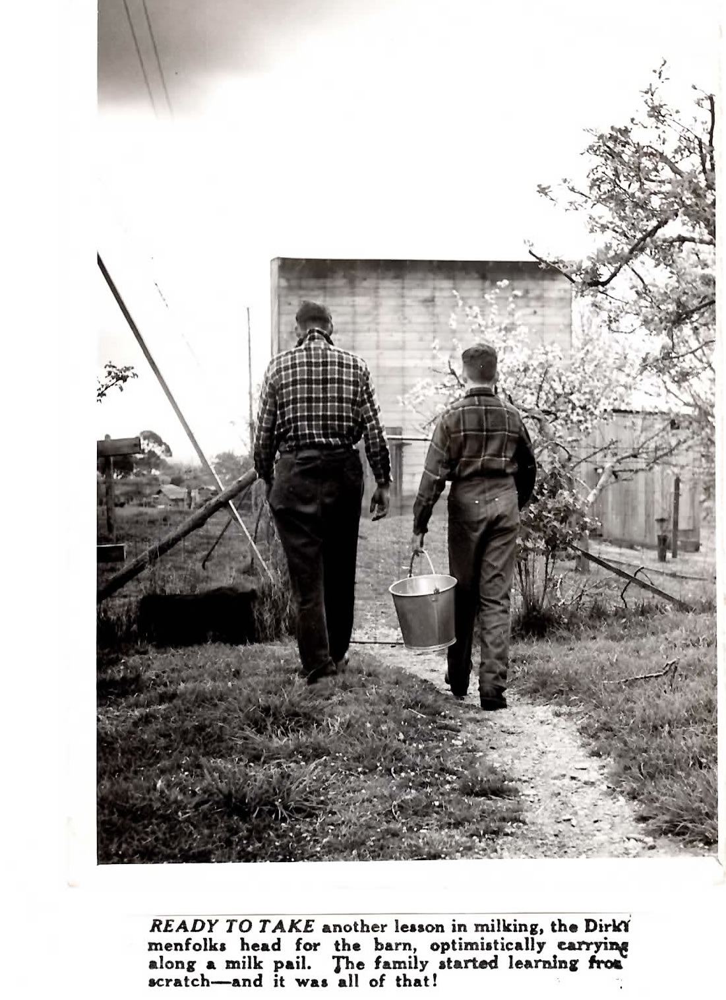
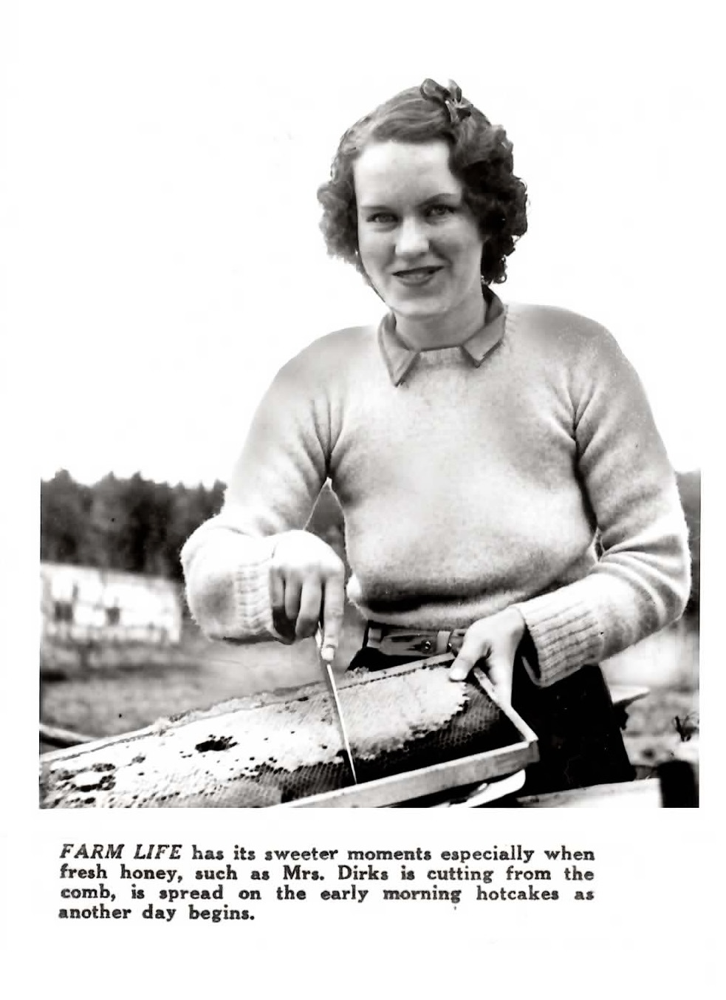
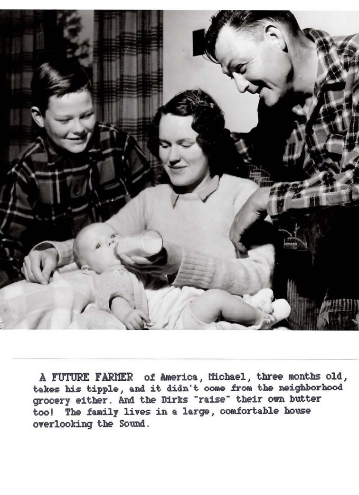
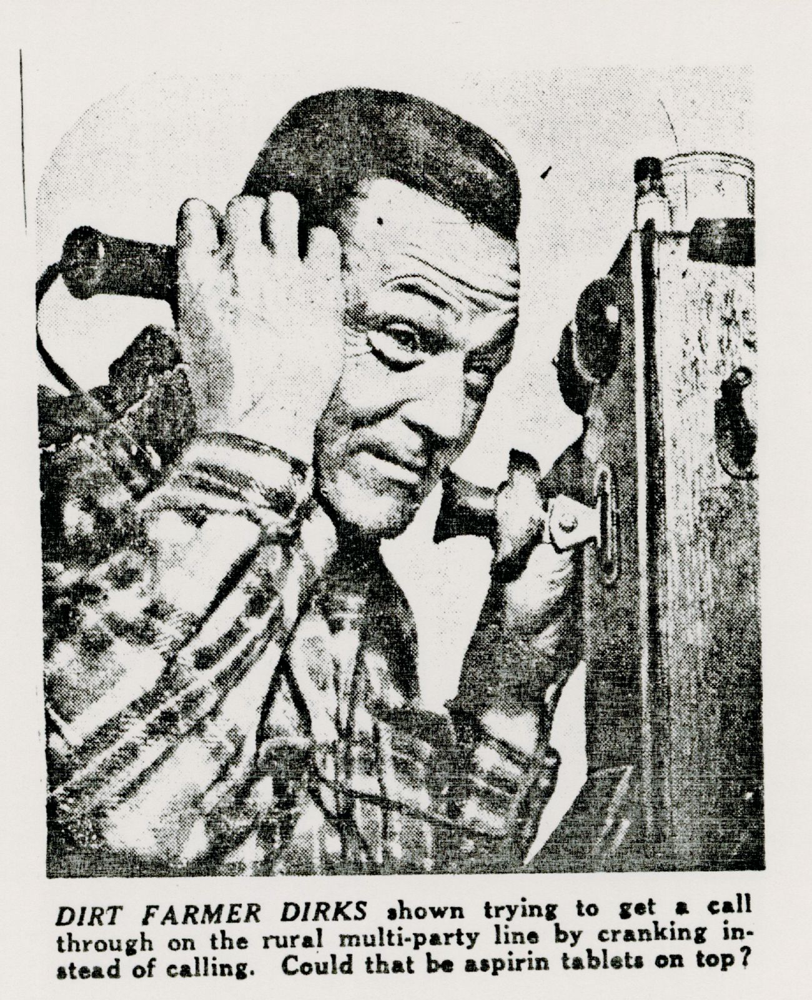
The first City Bred Farmer column began on the front page of the Seattle Post Intelligencer morning newspaper followed by a full page inside. Between 1946 and 1958 the column appeared on the paper’s front page over 20 times.
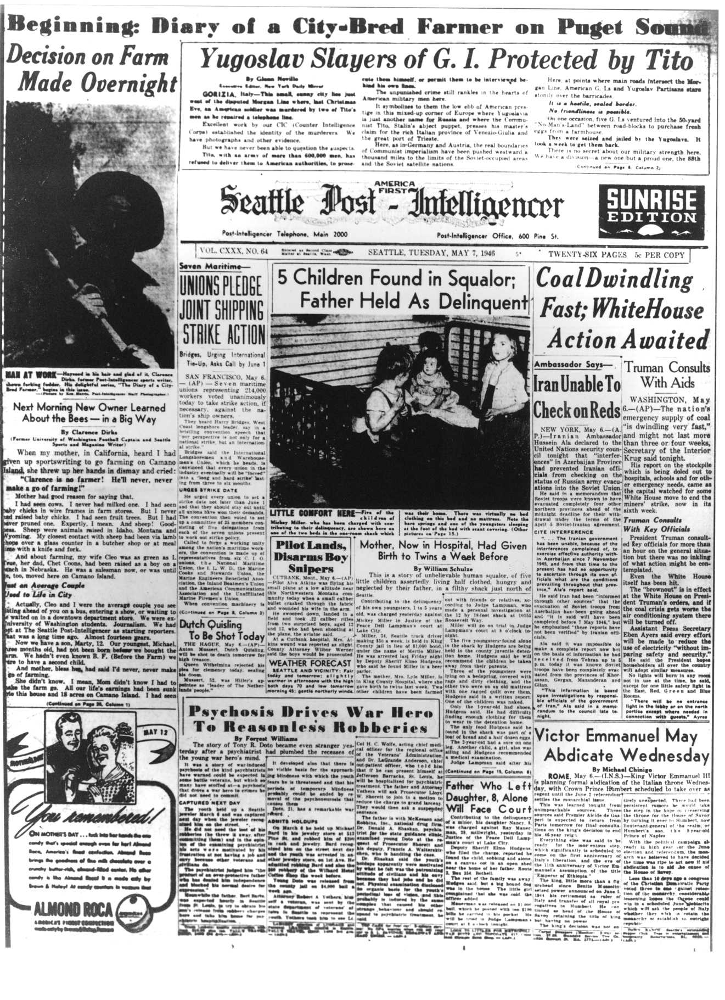